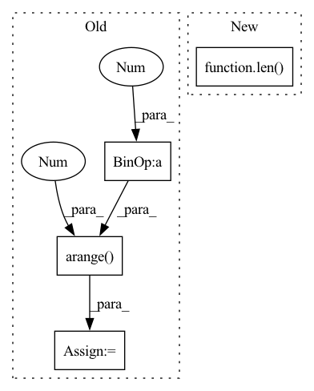

Pattern ID :41706

Before Change
if n_position > skip:
longer_pattern = np.arange(0, np.ceil( (n_position) / skip) * skip + 0.01, 0.01)
else:
longer_pattern = np.arange(0, n_position + 0.01, 0.01)
skip = n_position
num = len(longer_pattern) - 1
// omiga is the angular frequencies
After Change
fai = 0 if i <= (emb_dim // 2) else 2 * np.pi * ((-i + (emb_dim // 2)) / (emb_dim // 2))
longer_pattern = np.arange(0, np.ceil((n_position) / Td) * Td, 0.01)
if i % 2 ==1:
x[:,i] = self.basecos(longer_pattern, Td, fai)[np.linspace(0, len(longer_pattern), n_position, dtype = "int", endpoint = False)]
else:
x[:,i] = self.basesin(longer_pattern, Td, fai)[np.linspace(0, len(longer_pattern), n_position, dtype = "int", endpoint = False)]
In pattern: SUPERPATTERN
Frequency: 3
Non-data size: 4
Instances
Fragment ID: 116989385
Project Name: yining043/vrp-dact
Commit Name: 42304953c987d6894dca87148af8b35748f0b748
Time: 2022-10-09
Author: yiningma@u.nus.edu
File Name: nets/graph_layers.py
M Class Name: EmbeddingNet
N Class Name: EmbeddingNet
M Method Name: Cyclic_Positional_Encoding(5)
N Method Name: Cyclic_Positional_Encoding(5)
M Parent Class: nn.Module
N Parent Class: nn.Module
M File Name: nets/graph_layers.py
N File Name: nets/graph_layers.py
M Start Line: 569
M End Line: 595
N Start Line: 567
N End Line: 577
'>
Before Change
if n_position > skip:
longer_pattern = np.arange(0, np.ceil( (n_position) / skip) * skip + 0.01, 0.01)
else:
longer_pattern = np.arange(0, n_position + 0.01, 0.01)
skip = n_position
num = len(longer_pattern) - 1
omiga = 2 * np.pi / skip
After Change
fai = 0 if i <= (emb_dim // 2) else 2 * np.pi * ((-i + (emb_dim // 2)) / (emb_dim // 2))
longer_pattern = np.arange(0, np.ceil((n_position) / Td) * Td, 0.01)
if i % 2 ==1:
x[:,i] = self.basecos(longer_pattern, Td, fai)[np.linspace(0, len(longer_pattern), n_position, dtype = "int", endpoint = False)]
else:
x[:,i] = self.basesin(longer_pattern, Td, fai)[np.linspace(0, len(longer_pattern), n_position, dtype = "int", endpoint = False)]
'>
Fragment ID: 116989387
Project Name: yining043/pdp-n2s
Commit Name: 8a07ea6c801606847f7df0c5ebf346e2d9abee4a
Time: 2022-10-07
Author: yiningma@u.nus.edu
File Name: nets/graph_layers.py
M Class Name: EmbeddingNet
N Class Name: EmbeddingNet
M Method Name: cyclic_position_encoding_pattern(4)
N Method Name: cyclic_position_encoding_pattern(4)
M Parent Class: nn.Module
N Parent Class: nn.Module
M File Name: nets/graph_layers.py
N File Name: nets/graph_layers.py
M Start Line: 802
M End Line: 827
N Start Line: 799
N End Line: 809
'>
Before Change
ax.grid(linestyle="--")
ax.set_xlabel("Iterations")
ax.set_ylabel("BCE Loss")
epoch_ticks = num_batch * np.arange(1, num_epochs + 1)
ax.set_xticks(epoch_ticks)
ax.set_xticklabels([f"Epoch {i + 1}" for i in range(len(epoch_ticks))])
fig.savefig(os.path.join("figs", f"{save_title}_log.png"), dpi=300)
After Change
def plot_train_history(loss_history, acc_history, save_title):
fig, ax_left = plt.subplots()
ax_right = ax_left.twinx()
time_ = range(len(loss_history))
ax_left.set_xlabel("Epochs")
ax_left.set_ylabel("BCE Loss")
ax_left.grid(linestyle="--")
'>
Fragment ID: 116989382
Project Name: jaketae/deep-malware-detection
Commit Name: 6d4ce95c07caa1a1b6d7cf6443eaa1776242769d
Time: 2020-11-22
Author: jaesungtae@gmail.com
File Name: utils.py
M Class Name: AnonimousClass
N Class Name: AnonimousClass
M Method Name: plot_train_history(3)
N Method Name: plot_train_history(4)
M Parent Class:
N Parent Class:
M File Name: utils.py
N File Name: utils.py
M Start Line: 65
M End Line: 73
N Start Line: 73
N End Line: 83